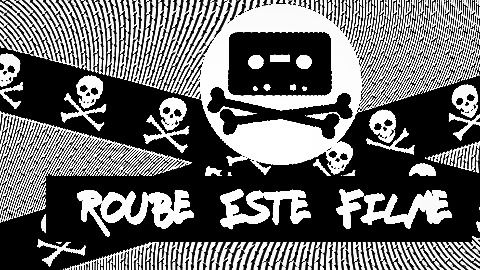

Barra de Contribuição do Apoiadores
Para Assistir Hoje
Obras Recém Chegadas
-
Cyberpunk 2077: Phoenix Program
2020 · 16 · 41
-
A Star Is Born
1937 · 14 · 106
-
Catadores na Pandemia
Abandono na Metrópole
2021 · l · 16
-
Lú
2019 · 14 · 117
-
Belowars
2007 · l · 71
-
BRICHOS
A Floresta é Nossa
2012 · l · 83
-
Casa 05: O Sol que nos habita
Um olhar sobre a arte e a vida de...
2020 · l · 66
-
Comandante Arian
Uma História de Mulheres, Guerra e...
2018 · 16 · 85
Em Alta na Libreflix
-
Hotxuá
2012 · 10 · 70
-
O Acre Existe
2014 · l · 114
-
Quando Sinto Que Já Sei
2014 · l · 78
-
O Que É Nosso
Reclaiming the Jungle
2014 · 14 · 68
-
Amazônia, da impertinência à conciliação
2014 · l · 48
-
Disruption
A Ruptura
2014 · 10 · 53
-
Que Estranha Forma de Vida
2015 · l · 109
-
Antiga Amazônia Presente
2015 · l · 112
Seleção 1º de Maio
")
Longas Populares
-
Metrópolis
1927 · L · 118
-
The Code
A história do GNU/Linux
2001 · L · 59
-
Home
Nosso Planeta, Nossa Casa
2009 · l · 119
-
Quebrando o Tabu
2011 · 14 · 80
-
Life in a Day
A Vida em Um Dia
2012 · 14 · 94
-
Planeta Oceano
2012 · 10 · 92
-
A Educação Proibida
2012 · l · 145
-
The Pirate Bay AFK
The Pirate Bay Além do Teclado
2013 · 10 · 82
-
The Punk Singer
2013 · 16 · 81
-
O Menino da Internet
A História de Aaron Swartz
2014 · 12 · 105
-
Grounded
Fazendo The Last Of Us
2014 · 16 · 84
-
O Rap Pelo Rap
2015 · 14 · 75
-
Algorithm
O Filme Hacker
2015 · 14
-
Observar e Absorver
A Filosofia de Eduardo Marinho
2016 · 12 · 70
-
Freenet
2016 · l · 95
-
Desperdício Desperdiçado
2017 · l · 49
Curtas Populares
-
Eu Não Quero Voltar Sozinho
2010 · 12 · 17
-
Sintel
2010 · 10 · 15
-
O Fim do Recreio
2012 · L · 18
-
Sementes da Liberdade
2012 · l · 31
-
Tears of Steel
2012 · 12 · 13
-
Tem Gringo no Morro
2013 · l · 27
-
O Nostalgista
2014 · l · 17
-
Quando Parei de Me Preocupar com...
2015 · 14 · 15
-
")
NoisDaRua
2015 · l · 10
-
Crack, repensar
2015 · 16 · 26
-
Hotel Laide
2017 · 14 · 24
Especial #DitaduraNuncaMais
-
")
JANGO
Como, quando e por que se derruba...
1984 · L · 115
-
Marighella
Retrato falado do guerrilheiro
2001 · 14 · 55
-
Verdade 12.528
2013 · 12 · 54
-
")
Os Advogados contra a Ditadura
Por uma questão de Justiça
2014 · 12 · 130
-
Em Busca da Verdade
Episódios 1 e 2
2015 · 10 · 112
-
Filhos da Ditadura
2016 · 12 · 30
-
Cúmplices?
A Volkswagen e a Ditadura Militar...
2017 · 12 · 45
-
Conservadorismo em Foco
2018 · 14 · 71
Séries Populares
Curtas Recém Chegados
-

Roube Este Filme
Parte 1
2006 · l · 32
-
Roube Este Filme 2
2007 · l · 44
-
O Mínimo Existencial
2009 · l · 15
-
Xetá
2010 · l · 20
-
Remixofagia
Alegorias de uma revolução
2011 · l · 16
-
Olhar Contestado
Desvendando códigos de um conflito
2012 · l · 15
-
Nuvens de Veneno
Uso de agrotóxico
2013 · l · 23
-
Por Um Sonho Urbano
2014 · l · 20
-
A Manada
2014 · 16 · 21
-
Palhaços Anônimos
2014 · l · 15
-
Mindr
2015 · 14 · 25
-
A Bicicleta de Kant
2015 · 16 · 8